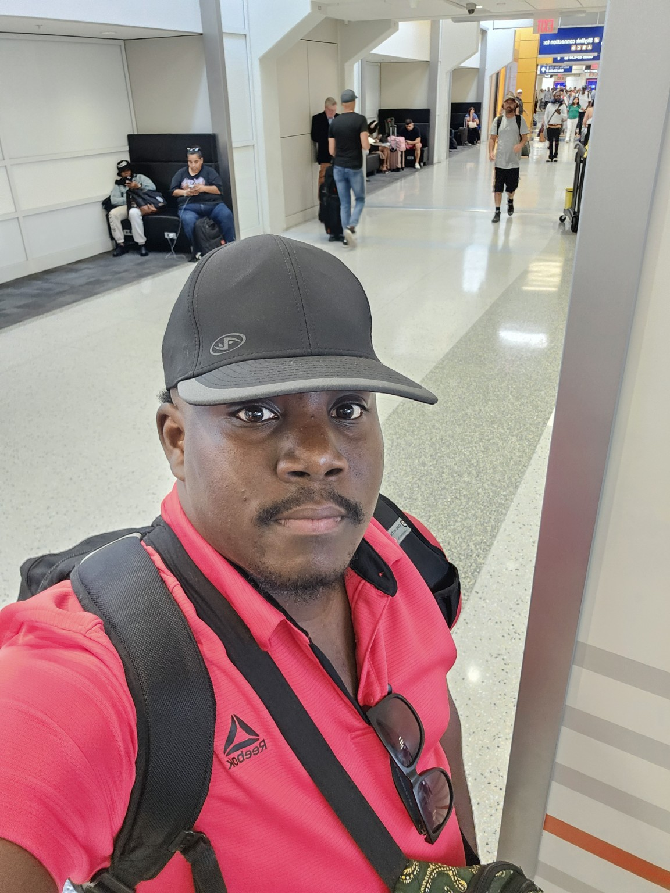

01
Technology & Coding
One of my strongest interests is technology. I enjoy understanding how digital products work and learning how code can be used to solve real problems.
Building websites also gives me a chance to combine technical skills with creativity and design.